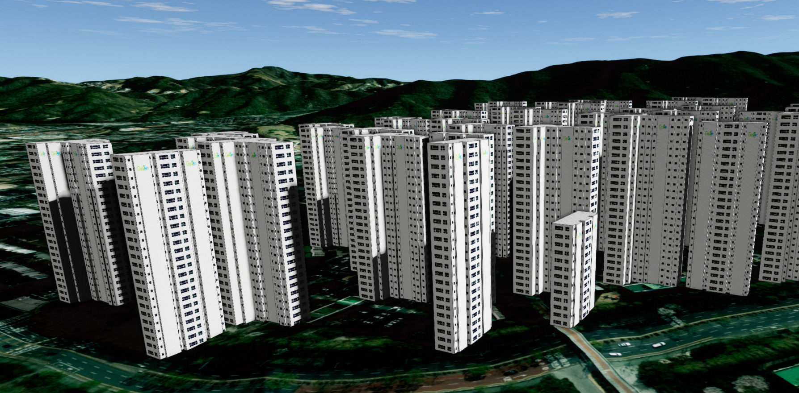
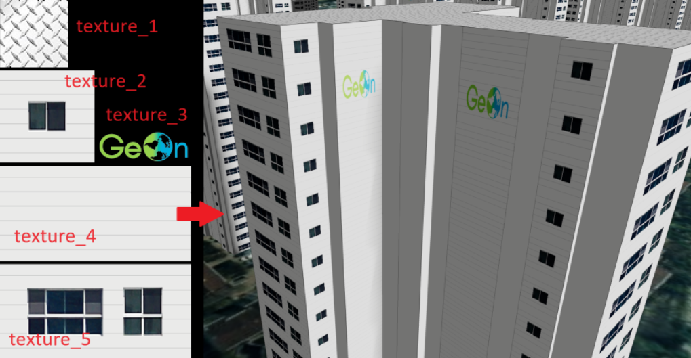
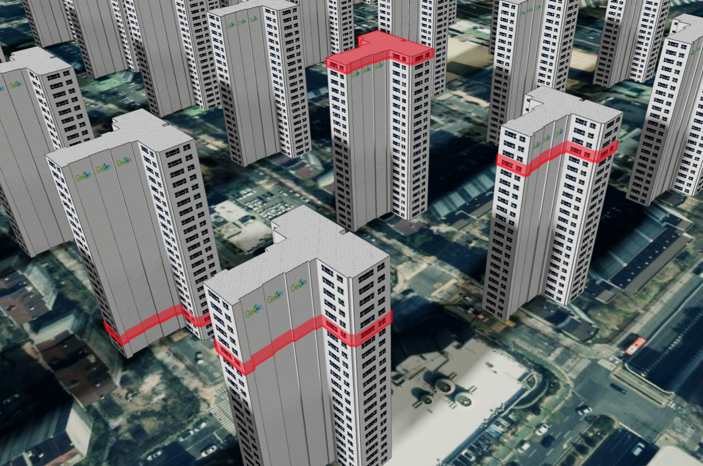

3D SHP 레이어 (U3dModelShapeLayer)
목차
- 3D SHP 레이어 이해하고 시작하기
- SHP 파일을 읽어 3D 건물로 표시하기
- 건물 높이와 라벨 설정하기
- 색상과 텍스처 설정하기
- 건물과 원본 Feature 조회하기
- 건물 층 조회하고 선택하기
- 건물 제거하고 레이어 정리하기
- 좌표계와 데이터 제약 확인하기

U3dModelShapeLayer는 SHP 파일에서 변환한 GeoJSON FeatureCollection의 면 도형을 높이가 있는 3D 건물 Mesh로 만드는 레이어입니다.
이 문서는 3D SHP 실행 예제를 바탕으로 파일 읽기, 높이와 스타일 설정, 건물 조회와 제거, 층 선택 및 자원 정리 흐름을 설명합니다.
1. 3D SHP 레이어 이해하고 시작하기
U3dModelShapeLayer는 건물 외곽선과 속성 정보가 들어 있는 SHP 데이터를 3D로 돌출해 표시할 때 사용합니다.
높이가 필요 없는 지표면 도형은 2D SHP 레이어 - 2D SHP 레이어 이해하고 시작하기를 사용합니다.
레이어를 만들기 전에 지형 또는 이미지 지도와 U3dApp의 초기화가 끝나 있어야 합니다.
이 문서에서는 준비된 앱 객체의 이름을 app으로 사용합니다.
API
new GeOnDT.model.U3dModelShapeLayer(options) : GeoJSON 면 도형을 3D 건물로 생성할 레이어를 만드는 생성자
매개변수
options(U3dModelShapeLayerCO) : 레이어 생성 옵션. 모든 속성을 생략할 수 있음options.name(string) : 앱에서 레이어를 찾을 때 사용할 이름. 생략하면 GUID를 자동 생성options.drawline(boolean) : 건물 외곽선 생성 여부. 기본값:trueoptions.crs(string) : 레이어가 사용하는 월드 좌표계. 기본값:EPSG:3857options.sourceCRS(string) : 원본 데이터 좌표계 정보로 보관할 값. 기본값:EPSG:5179options.minlevel(number) : 건물을 표시할 타일 레벨. 기본값:17options.style(object) : 모든 건물에 적용할 기본 스타일options.style.color(THREE.ColorRepresentation) : 기본 건물 색상. 기본값:0xfaebd7options.style.opacity(number) : 기본 불투명도.0은 완전 투명,1은 완전 불투명. 기본값:1options.style.visible(boolean) : 건물 표시 여부. 기본값:trueoptions.setTopSideStyle(boolean) : 윗면과 옆면에 서로 다른 재질을 사용할지 여부. 기본값:falseoptions.showLabel(boolean) : 건물별 라벨 생성 여부. 기본값:falseoptions.fieldheight(string) : 건물 전체 높이를 읽을 Feature 속성 이름options.fieldlandheight(string) : 지면에서 띄울 높이를 읽을 Feature 속성 이름options.fieldlabeltext(string) : 라벨 문자열을 읽을 Feature 속성 이름options.fieldFloor(string) : 층수를 읽을 Feature 속성 이름options.heightFunction(function(U3dModelShapeFeature): number) : Feature별 건물 전체 높이를 반환하는 함수options.landHeightFunction(function(U3dModelShapeFeature): number) : Feature별 지면 기준 높이를 반환하는 함수options.styleFunction(function(U3dModelShapeFeature): object) : Feature별 표시 스타일을 반환하는 함수options.depthOffset(number) : 반투명 건물의 깊이 충돌을 줄이는 오프셋. 기본값:1options.usetexture(boolean) : 생성 시 텍스처를 적용할지 여부. 기본값:falseoptions.textureurl(string | Array<string>) : 미리 불러올 텍스처 URL 또는 URL 배열options.featureCollection(U3dModelShapeFeatureCollection) : 설정값으로 보관할 FeatureCollection
featureCollection 생성자 옵션은 컬렉션을 내부 목록에 보관하지만 건물 Mesh를 만들지는 않습니다.
건물을 생성하려면 앱에 레이어를 등록한 뒤 addFeatureCollection()을 호출해야 합니다.
API
U3dApp.addLayer(layer) : 생성한 레이어를 앱에 등록하는 함수
매개변수
layer(U3dLayer) : 등록할 3D SHP 레이어. 필수
반환값
return(U3dLayer | undefined) : 등록한 레이어 또는 등록하지 못한 경우undefined
API
U3dApp.showLayer(name, show) : 레이어를 표시하거나 숨기고 로딩이 끝날 때 완료되는 함수
매개변수
name(string) : 표시 상태를 바꿀 레이어 이름. 필수show(boolean) :true이면 표시하고false이면 숨김. 기본값:true
반환값
return(Promise<{result: string, content: U3dLayer}> | false) : 로딩 완료 Promise. 앱이나 지도가 준비되지 않았으면false
텍스처 URL을 생성자에 전달했다면 showLayer()의 Promise가 완료될 때까지 기다린 뒤 Feature를 추가합니다.
텍스처를 사용하지 않아도 같은 순서를 따르면 초기화 시점 차이 없이 안전하게 작업할 수 있습니다.
const shpLayer = new GeOnDT.model.U3dModelShapeLayer({
name: 'buildings-3d',
minlevel: 17,
drawline: true,
style: {
color: 0xd4d6d7,
opacity: 0.9,
visible: true
}
});
if (!app.addLayer(shpLayer))
throw new Error('3D SHP 레이어를 앱에 등록하지 못했습니다.');
const showResult = app.showLayer(shpLayer.getName(), true);
if (showResult === false)
throw new Error('지도가 아직 준비되지 않았습니다.');
await showResult;
2. SHP 파일을 읽어 3D 건물로 표시하기
UShpParser는 .shp의 도형, .prj의 좌표계와 .dbf의 속성을 GeoJSON FeatureCollection으로 변환합니다..shp와 .dbf는 ArrayBuffer로 읽고 .prj는 문자열로 읽습니다.
API
UShpParser.parseShp(shpFile, projFile) : SHP 도형을 EPSG:4326 위경도 GeoJSON 도형 목록으로 변환하는 함수
매개변수
shpFile({result: ArrayBuffer}) :.shp파일을 읽은 결과. 필수projFile({result: string} | string) :.prj파일을 읽은 결과 또는 실제 원본 좌표계의 EPSG 코드. 필수
반환값
return(Array<object> | undefined) : 변환한 GeoJSON 도형 목록. 입력이 없으면undefined
API
UShpParser.parseDbf(dbfFile, encoding) : DBF 속성 테이블을 Feature 순서의 속성 객체 목록으로 변환하는 함수
매개변수
dbfFile({result: ArrayBuffer}) :.dbf파일을 읽은 결과. 필수encoding(string) : 문자열 인코딩. 한글이 깨지면euc-kr을 사용. 기본값:utf8
반환값
return(Array<object> | undefined) : Feature 속성 객체 목록
API
UShpParser.combine(arr) : 도형 목록과 속성 목록을 GeoJSON FeatureCollection으로 결합하는 함수
매개변수
arr([Array<object>, Array<object> | undefined]) :[도형 목록, 속성 목록]순서의 배열. 필수
반환값
return(U3dModelShapeFeatureCollection) :features배열을 가진 FeatureCollection
API
U3dModelShapeLayer.addFeatureCollection(featureCollection) : 컬렉션의 Feature를 3D 건물로 생성해 레이어에 추가하는 함수
매개변수
featureCollection(U3dModelShapeFeatureCollection) : 3D 건물로 만들 Feature 목록. 필수
반환값
return(Promise<unknown>) : Feature 처리가 끝나면 완료되고 처리 중 오류가 발생하면 거부되는 Promise
이 함수는 기존 건물을 교체하지 않고 새 컬렉션과 건물을 계속 추가합니다.
등록 과정에서 컬렉션과 각 Feature에 Mesh를 연결하는 uuid가 추가되므로 입력 객체가 변경됩니다.
1. 파일 세트 읽기
같은 기본 이름의 .shp, .prj, .dbf를 한 번에 선택하고 확장자에 맞는 방식으로 읽습니다..shp는 필수이고 .prj와 .dbf는 선택 사항입니다.
function readShapefilePart(file) {
return new Promise(function (resolve, reject) {
const dotIndex = file.name.lastIndexOf('.');
const name = file.name.slice(0, dotIndex);
const ext = file.name.slice(dotIndex + 1).toLowerCase();
if (!['shp', 'prj', 'dbf'].includes(ext)) {
reject(new Error('지원하지 않는 파일 형식입니다: ' + file.name));
return;
}
const reader = new FileReader();
reader.onload = function () {
resolve({result: reader.result, ext: ext, name: name});
};
reader.onerror = function () {
reject(new Error('파일을 읽지 못했습니다: ' + file.name));
};
if (ext === 'prj')
reader.readAsText(file);
else
reader.readAsArrayBuffer(file);
});
}
async function readShapefileSet(files) {
const parts = await Promise.all(files.map(readShapefilePart));
const fileSet = {name: parts[0].name};
parts.forEach(function (part) {
if (part.name !== fileSet.name)
throw new Error('.shp, .prj, .dbf 파일 이름이 서로 같아야 합니다.');
fileSet[part.ext] = part;
});
if (!fileSet.shp)
throw new Error('.shp 파일을 반드시 선택해야 합니다.');
return fileSet;
}
2. 선택한 파일로 3D 건물 생성하기
다음 예제는 <input type="file" id="shp-files" accept=".shp,.prj,.dbf" multiple> 요소와 1절에서 만든 shpLayer를 사용합니다..prj가 없다면 데이터의 실제 좌표계 코드를 기본값 자리에 지정해야 합니다.
const fileInput = document.querySelector('#shp-files');
fileInput.addEventListener('change', async function (event) {
const files = Array.from(event.target.files || []);
if (files.length === 0) return;
fileInput.disabled = true;
try {
const fileSet = await readShapefileSet(files);
const parser = new GeOnDT.parser.UShpParser();
const geometries = parser.parseShp(fileSet.shp, fileSet.prj || 'EPSG:5179');
if (!geometries || geometries.length === 0)
throw new Error('SHP 파일에 생성할 도형이 없습니다.');
const attributes = fileSet.dbf
? parser.parseDbf(fileSet.dbf, 'euc-kr')
: undefined;
const featureCollection = parser.combine([geometries, attributes]);
await shpLayer.addFeatureCollection(featureCollection);
await app.fitLayerExtent(shpLayer.getName(), true, 800, 0, 45);
console.log(fileSet.name + '.shp 생성 완료: ' + featureCollection.features.length + '개 건물');
} catch (error) {
console.error(error instanceof Error ? error.message : String(error));
} finally {
fileInput.disabled = false;
fileInput.value = '';
}
});
addFeatureCollection()은 각 Feature를 동기적으로 Mesh로 만들고 Deferred 객체를 완료합니다.
화면에는 현재 카메라와 타일 레벨에 해당하는 건물부터 순차적으로 나타납니다.
3. 건물 높이와 라벨 설정하기
건물 전체 높이는 미터 단위이며 다음 우선순위로 결정됩니다.
heightFunction(feature)의 반환값- Feature의
hg속성 - Feature의
bd_height속성 fieldheight가 가리키는 속성fieldFloor가 가리키는 층수에 층 높이를 곱한 값- 위 값이 모두 없으면
100m
층 높이는 기본 4m입니다.
현재 구현은 생성자 옵션 floorHeight로 공통 층 높이를 받고 fieldFloorHeight가 가리키는 Feature 속성으로 건물마다 층 높이를 바꿀 수 있습니다.
지면 기준 높이는 landHeightFunction(feature), Feature의 el, fieldlandheight가 가리키는 속성 순서로 결정되며 기본값은 0m입니다.
1. 속성 이름으로 높이 설정하기
const shpLayer = new GeOnDT.model.U3dModelShapeLayer({
name: 'buildings-by-field',
fieldFloor: 'FLR_NO',
floorHeight: 3.3,
fieldlandheight: 'LAND_HG',
fieldlabeltext: 'BLD_NM',
showLabel: true
});
DBF의 숫자 속성은 문자열일 수 있지만 레이어가 Number()로 변환합니다.
숫자로 변환할 수 없는 지면 높이는 0으로 처리됩니다.
2. 콜백으로 높이 설정하기
콜백은 Mesh 생성 시 Feature마다 한 번 호출됩니다.
콜백 안에서 속성이 없거나 숫자가 아닌 경우를 처리하고 유효한 미터 값을 반환합니다.
function heightFunction(feature) {
const properties = feature.properties || {};
const floorCount = Number(properties.FLR_NO);
const floorHeight = Number(properties.EXTR_HG);
if (!Number.isFinite(floorCount) || !Number.isFinite(floorHeight))
return 10;
return Math.max(0, floorCount * floorHeight);
}
function landHeightFunction(feature) {
const landHeight = Number((feature.properties || {}).LAND_HG);
return Number.isFinite(landHeight) ? landHeight : 0;
}
const shpLayer = new GeOnDT.model.U3dModelShapeLayer({
name: 'buildings-by-function',
heightFunction: heightFunction,
landHeightFunction: landHeightFunction
});
API
U3dModelShapeLayer.showLabel(show) : 모든 건물의 속성 라벨을 표시하거나 숨기는 함수
매개변수
show(boolean) :true이면 라벨을 생성하거나 표시하고false이면 제거. 필수
fieldlabeltext가 지정되어 있으면 해당 Feature 속성을 라벨로 사용합니다.
지정하지 않으면 Mesh 이름을 사용하므로 의미 있는 라벨을 표시하려면 DBF 필드 이름을 설정하는 것이 좋습니다.
shpLayer.showLabel(true);
shpLayer.showLabel(false);
4. 색상과 텍스처 설정하기
공통 style은 모든 건물에 적용되고 styleFunction은 Feature별 스타일을 우선 적용합니다.styleFunction의 반환값을 바꾼 뒤에는 updateStyle()을 호출해야 기존 Mesh의 재질이 다시 생성됩니다.
API
U3dModelShapeLayer.setStyle(style) : 기존 건물의 공통 색상과 불투명도를 변경하는 함수
매개변수
style(object) : 변경할 스타일. 기본값:{}style.color(THREE.ColorRepresentation) : 건물 색상style.opacity(number) : 불투명도.0초과1이하 사용 권장style.label(string) : 레이어 전체 바운딩 박스 중심에 표시할 공통 라벨
API
U3dModelShapeLayer.getStyle() : 현재 공통 스타일 객체를 반환하는 함수
반환값
return(object) : 레이어가 직접 사용하는 스타일 객체
API
U3dModelShapeLayer.updateStyle() : styleFunction을 다시 실행하고 모든 건물의 재질을 갱신하는 함수
shpLayer.setStyle({
color: '#4c8bf5',
opacity: 0.75
});
console.log(shpLayer.getStyle());
getStyle()은 복사본이 아니라 내부 객체를 반환합니다.
속성을 직접 바꿨다면 화면 반영을 위해 updateStyle()을 호출합니다.
1. Feature별 스타일 설정하기
styleFunction(feature)은 color, opacity, visible, imgvisible, imgurl, multipleTexture, multiSideFunction을 포함하는 객체를 반환할 수 있습니다.
반환값이 없으면 공통 style을 사용합니다.
let highlightPublicBuildings = true;
function styleFunction(feature) {
const properties = feature.properties || {};
if (highlightPublicBuildings && properties.BUILDING_TYPE === 'PUBLIC') {
return {
color: '#ffb300',
opacity: 1,
visible: true
};
}
return {
color: '#d4d6d7',
opacity: 0.7,
visible: true
};
}
const shpLayer = new GeOnDT.model.U3dModelShapeLayer({
name: 'styled-buildings',
styleFunction: styleFunction
});
highlightPublicBuildings = false;
shpLayer.updateStyle();
2. 기본 텍스처 적용하기
텍스처는 생성자에서 먼저 불러오므로 showLayer() 완료 후 Feature를 추가합니다.
브라우저가 직접 읽을 수 있도록 같은 출처의 URL을 사용하거나 서버에 올바른 CORS 헤더를 설정해야 합니다.
다음 예제의 featureCollection은 2절에서 parser.combine()으로 만든 객체입니다.
const texturedLayer = new GeOnDT.model.U3dModelShapeLayer({
name: 'textured-buildings',
usetexture: true,
textureurl: [
'/assets/building-roof.png',
'/assets/building-wall.png'
],
setTopSideStyle: true
});
if (!app.addLayer(texturedLayer))
throw new Error('텍스처 레이어를 등록하지 못했습니다.');
const textureReady = app.showLayer(texturedLayer.getName(), true);
if (textureReady === false)
throw new Error('지도가 아직 준비되지 않았습니다.');
await textureReady;
await texturedLayer.addFeatureCollection(featureCollection);
setTopSideStyle이 true이면 textureurl[0]은 윗면, textureurl[1]은 옆면에 사용됩니다.
두 번째 URL이 없으면 첫 번째 텍스처를 양쪽에 사용합니다.
3. 면마다 텍스처 선택하기
여러 재질을 사용하려면 styleFunction이 multipleTexture: true와 multiSideFunction을 반환해야 합니다.multiSideFunction(mesh, vertices, width, floor, normal)은 각 면을 순회하며 사용할 재질 인덱스와 반복 설정을 반환합니다.
function multiSideFunction(mesh, vertices, width, floor, normal) {
if (floor === 'roof') {
return {
materialIndex: [0],
imageSize: 1024,
repeat: 5
};
}
return {
materialIndex: width < 10 ? [1] : [1, 2],
imageScale: 0.7
};
}
function texturedStyleFunction(feature) {
return {
color: '#ffffff',
opacity: 1,
visible: true,
imgvisible: true,
multipleTexture: true,
multiSideFunction: multiSideFunction
};
}
materialIndex는 textureurl 배열의 인덱스이며 필수입니다.
두 인덱스를 반환하면 두 번째 이미지를 첫 번째 이미지 위에 합성하고 imageScale로 합성 크기를 조절합니다.repeat을 사용하려면 양의 imageSize도 함께 반환합니다.

5. 건물과 원본 Feature 조회하기
FeatureCollection과 Feature에는 건물 생성 시 Mesh와 연결되는 uuid가 기록됩니다.
공개 검색 API를 사용하면 내부 _modelList에 직접 접근하지 않고 원본 데이터와 Mesh를 서로 찾을 수 있습니다.
API
U3dModelShapeLayer.getFeatureCollection() : 레이어에 등록된 FeatureCollection 목록을 반환하는 함수
반환값
return(Array<U3dModelShapeFeatureCollection>) : 등록 순서의 FeatureCollection 배열
API
U3dModelShapeLayer.searchModelAsFeatureCollection(featureCollection) : 컬렉션에 속한 모든 건물 Mesh를 찾는 함수
매개변수
featureCollection(U3dModelShapeFeatureCollection) : 조회할 컬렉션. 필수
반환값
return(Array<UMesh>) : 조회된 건물 Mesh 배열. 없으면 빈 배열
API
U3dModelShapeLayer.searchModelAsFeature(feature) : 단일 Feature에 해당하는 건물 Mesh를 찾는 함수
매개변수
feature(U3dModelShapeFeature) : 조회할 Feature. 필수
반환값
return(UMesh | undefined) : 연결된 건물 Mesh 또는undefined
API
U3dModelShapeLayer.searchFeatureAsMesh(mesh) : 건물 Mesh에 연결된 원본 Feature와 FeatureCollection을 찾는 함수
매개변수
mesh(UMesh) : 조회할 건물 Mesh. 필수
반환값
return({featureCollection: U3dModelShapeFeatureCollection | undefined, feature: U3dModelShapeFeature | undefined}) : 원본 데이터 조회 결과
const collections = shpLayer.getFeatureCollection();
const firstCollection = collections[0];
if (firstCollection) {
const models = shpLayer.searchModelAsFeatureCollection(firstCollection);
const firstFeature = firstCollection.features[0];
const firstModel = firstFeature
? shpLayer.searchModelAsFeature(firstFeature)
: undefined;
if (firstModel) {
const source = shpLayer.searchFeatureAsMesh(firstModel);
console.log(source.feature && source.feature.properties);
}
console.log('건물 수:', models.length);
}
API
U3dModelShapeLayer.getParam() : 저장 가능한 현재 레이어 설정을 반환하는 함수
반환값
return(U3dModelShapeLayerParam) : 이름, 레벨, URL, 좌표계, 스타일, 높이 필드와 텍스처 설정
getParam()에는 FeatureCollection과 콜백 함수가 포함되지 않습니다.
복원하려면 getFeatureCollection() 결과를 별도로 저장하고 heightFunction, landHeightFunction, styleFunction을 코드에서 다시 지정합니다.
6. 건물 층 조회하고 선택하기
층 API는 건물 생성 시 계산한 층별 면 정보를 사용합니다.floorHeight, fieldFloorHeight 또는 전체 높이와 층수가 올바르지 않으면 층 판정 결과도 올바르지 않습니다.
API
U3dModelShapeLayer.traverseAllFloor(mesh, callback) : 건물의 모든 층과 면을 순회하는 함수
매개변수
mesh(UMesh) : 순회할 건물 Mesh. 필수callback(function(UMesh, Array<WorldPositionVector3>, number, number | 'roof', Vector3): void) : Mesh, 면의 월드 정점, 너비, 층 번호 또는roof, 법선 벡터를 받는 함수. 필수
API
U3dModelShapeLayer.traverseFloor(mesh, floor, callback) : 지정한 층의 면만 순회하는 함수
매개변수
mesh(UMesh) : 순회할 건물 Mesh. 필수floor(number) : 순회할 층 번호. 필수callback(function(UMesh, Array<WorldPositionVector3>, number, number, Vector3): void) : 층의 각 면 정보를 받는 함수. 필수
const models = shpLayer.searchModelAsFeatureCollection(firstCollection);
const model = models[0];
if (model) {
shpLayer.traverseFloor(model, 1, function (mesh, vertices, width, floor, normal) {
console.log('층:', floor, '면 너비:', width, '정점:', vertices, '법선:', normal);
});
}
API
U3dModelShapeLayer.getFloor(model, vertices) : 월드 좌표 정점이 속한 층 번호를 반환하는 함수
매개변수
model(THREE.Mesh) : 대상 건물 Mesh. 필수vertices(WorldPositionVector3 | Array<WorldPositionVector3>) : 한 점 또는 같은 면의 점 목록.EPSG:3857월드 좌표. 필수
반환값
return(number | undefined) : 층 번호 또는 찾지 못한 경우undefined
API
U3dModelShapeLayer.setSelectFloor(model, target, option) : 건물의 한 층을 강조하거나 투명하게 잘라내는 함수
매개변수
model(THREE.Mesh) : 대상 건물 Mesh. 필수target(WorldPositionVector3 | Array<WorldPositionVector3> | number) : 층을 판정할 월드 좌표 또는 층 번호. 필수option(object) : 선택 스타일. 기본값:{}option.color(THREE.ColorRepresentation) : 강조 색상. 기본값:0x00ff00option.opacity(number) : 강조 불투명도. 기본값:0.7.0이면 해당 층을 투명하게 잘라냄
API
U3dModelShapeLayer.clearSelectFloor(mesh) : 선택한 층의 강조와 클리핑을 해제하는 함수
매개변수
mesh(THREE.Mesh) : 선택을 해제할 건물. 생략하면 레이어의 모든 층 선택을 해제
if (model) {
shpLayer.setSelectFloor(model, 1, {
color: '#e00000',
opacity: 0.5
});
shpLayer.clearSelectFloor(model);
shpLayer.clearSelectFloor();
}

opacity: 0 선택은 렌더러의 로컬 클리핑을 사용합니다.
선택을 끝냈다면 clearSelectFloor()를 호출해 클리핑 평면을 제거합니다.
7. 건물 제거하고 레이어 정리하기
일부 건물만 제거할 때는 원본 Feature 또는 FeatureCollection을 사용합니다.
레이어 전체가 더 이상 필요하지 않으면 app.removeLayer()를 사용해야 Mesh, 라벨, 텍스처와 자동 지면 높이 갱신이 함께 해제됩니다.
API
U3dModelShapeLayer.removeModelAsFeatureCollection(featureCollection) : 컬렉션에 속한 모든 건물을 제거하는 함수
매개변수
featureCollection(U3dModelShapeFeatureCollection) : 제거할 컬렉션. 필수
API
U3dModelShapeLayer.removeModel(feature) : Feature 또는 같은 uuid를 가진 Mesh에 해당하는 건물을 제거하는 함수
매개변수
feature(U3dModelShapeFeature | UMesh) : 제거할 건물의 Feature 또는 Mesh. 필수
const collections = shpLayer.getFeatureCollection();
const targetCollection = collections[0];
if (targetCollection) {
const targetFeature = targetCollection.features[0];
if (targetFeature)
shpLayer.removeModel(targetFeature);
}
if (targetCollection)
shpLayer.removeModelAsFeatureCollection(targetCollection);
API
U3dApp.removeLayer(name) : 앱에서 레이어를 제거하고 레이어의 dispose()를 호출하는 함수
매개변수
name(string | U3dLayer) : 제거할 레이어 이름 또는 객체. 필수
shpLayer.clearSelectFloor();
app.removeLayer(shpLayer);
dispose()는 텍스처, Mesh 재질과 Geometry, 라벨, 타일 인덱스 및 자동 높이 갱신 등록을 정리합니다.
앱에 등록한 레이어에는 dispose()를 직접 호출하지 말고 app.removeLayer()를 사용합니다.
8. 좌표계와 데이터 제약 확인하기
UShpParser.parseShp()의 결과 좌표는 EPSG:4326의 [경도, 위도] 순서입니다.U3dModelShapeLayer의 Mesh 생성 코드는 이 좌표를 위경도로 간주해 EPSG:3857 월드 좌표로 변환합니다.
생성자의 sourceCRS 값만 바꿔서는 좌표가 변환되지 않으므로 원본 SHP 좌표계는 .prj 또는 parseShp()의 두 번째 인자로 정확히 전달해야 합니다.
현재 Mesh 생성이 정상적으로 지원하는 핵심 도형은 닫힌 Polygon입니다.
구현은 Polygon의 첫 번째 좌표 링만 사용하므로 내부 구멍이 있는 폴리곤은 구멍이 채워질 수 있습니다.MultiPolygon 처리 경로는 중첩 좌표를 완전하게 펼치지 않으므로 여러 분리 면을 표시하려면 파싱 후 Polygon Feature로 분리합니다.Point와 그 밖의 도형 타입은 3D 건물로 생성되지 않습니다.
Feature의 좌표 배열이 비었거나 도형이 지원되지 않으면 해당 Feature는 건너뜁니다.
높이 콜백과 스타일 콜백에서 예외가 발생하지 않도록 속성 존재 여부와 숫자 변환 결과를 확인합니다.
많은 Feature를 한 레이어에 추가하면 각 Feature마다 Geometry, 재질, 선택 Mesh와 타일 인덱스가 생성되므로 파일 크기와 건물 수를 제한하고 사용이 끝난 레이어를 제거합니다.
문제가 발생하면 다음 순서로 확인합니다.
.shp,.prj,.dbf의 기본 파일명이 같은지 확인합니다..prj가 없으면 실제 EPSG 코드를parseShp()에 전달합니다.- 파싱 결과의
features가 비어 있지 않은지 확인합니다. - 각 Feature의 도형 타입과 좌표 중첩 구조를 확인합니다.
- 높이와 지면 높이 속성이 유효한 숫자로 변환되는지 확인합니다.
- 현재 지도 레벨이 레이어의
minlevel에 도달했는지 확인합니다. - 텍스처 요청의 URL, CORS 응답과 네트워크 오류를 확인합니다.